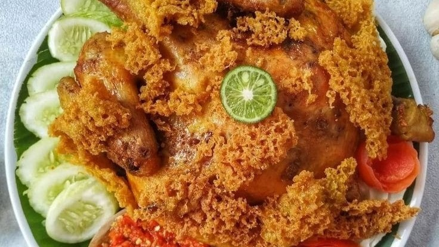

Ayam Goreng Kremes
Bahan
- 1 ekor ayam kampung/ayam pejantan (potong 4 bagian)
- 2 lembar daun salam
- 1 batang serai (memarkan)
- 1 bungkus kecil santan kara larutkan dengan 2 gelas air (bs diganti santan 1/2 butir kelapa)
- 1 sdt gula pasir
- secukupnya garam
- 6 siung bawang merah
- 4 siung bawang putih
- 1/2 sdm ketumbar
- 1 cm kunyit (optional)
- 4 butir kemiri
- 300 ml air sisa rebusan ayam
- 2 sdm munjung tepung beras
- 125 gram tepung Sagu
- 1/2 sdt baking powder
- 1 butir kuning telur
Cara Membuat
- Campur santan dan bumbu halus (serai, salam, garam, dan gula).
- Masukkan ayam masak dengan api kecil sampai santan menyusut dan bumbu meresap. Sisakan air rebusan ayam saring dan takar sampai 300 ml,sisihkan untuk kremesan.
- Panaskan minyak goreng,celup ayam ke adonan kremes lalu goreng dg api sedang sampai matang,angkat,tiriskan.
- Buat kremesan: Aduk semua bahan kecuali baking powder, panaskan minyak dalam wajan, sambil menunggu minyak panas masukkan baking powder ke dalam adonan, aduk rata.
- Pastikan minyak sudah benar-benar panas, aduk-aduk adonan menggunakan telapak tangan, ambil adonan dengan tangan, kucurkan adonan dengan bantuan jari tangan dengan gerakan berputar di atas wajan. Setelah adonan masuk akan menyebar sendiri. Setelah mulai kokoh balik adonan kemudian goreng sampai kecokelatan. Angkat lalu tiriskan dengan tissue dapur agar minyak terserap. Lalu taburkan kremes keatas ayam goreng. Ayam kremes siap disajikan.